Call of Duty: Warzone
Call of Duty's massive free-to-play battle royale with Gulag second chances.
Review
Warzone launched in early 2020 and became an immediate cultural phenomenon, briefly dethroning Fortnite and Apex in mainstream battle royale discourse. Its key innovations — the Gulag, a 1v1 arena that gives eliminated players a chance to respawn, and the Buystation economy that allows squadmates to purchase resurrections — added meaningful team dynamics to the formula and made death feel less final and more strategic.
The game's gunplay is its greatest strength: the call of duty weapon feel — precise, punchy, and deeply satisfying — translates perfectly to the longer-range, more deliberate engagements of the battle royale format. The loadout drop system, allowing players to deploy their precisely customized weapon builds mid-match, was a bold design decision that removed the loot dependency that frustrates casual players in competitors.
The game has struggled with consistency over its lifecycle. Cheating has been a chronic, persistent problem that anti-cheat updates have only partially addressed. Frequent massive update downloads are controversial. The shift to Urzikstan and the Al Mazrah maps divided the community. The integration of content from multiple Call of Duty titles simultaneously creates a cluttered, incoherent identity. But when it works — landing in a squad of four, a final circle in Verdansk, gunfight at 400 meters — nothing else quite replicates the feeling.
Strengths and Limits
- Gulag mechanic is a genuinely innovative second-chance system
- Call of Duty gunplay is the best in any battle royale
- Loadout drop system removes loot RNG frustration
- Enormous, consistent playerbase across all platforms
- Free-to-play with no mandatory spending
- Chronic cheating problem — Ricochet anti-cheat is imperfect
- Frequent massive patch downloads are disruptive
- Multi-title integration creates tonal and visual incoherence
- Aggressive cosmetic monetization — some content obscenely priced
Reader Fit
This review is written around fit: who should play it, what kind of session it rewards, and what friction might make it wrong for another reader. A high grade does not mean every player should buy it immediately. It means the game has a clear identity, a strong reason to exist, and enough craft to justify attention from the right audience.